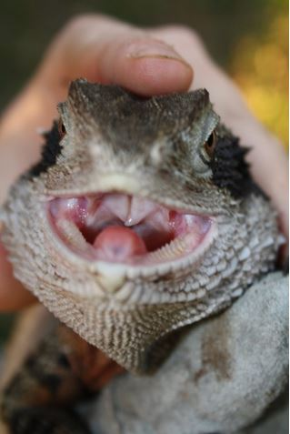

During the daily husbandry routine, health signs to look out for are:
Consistency of faecal matter is difficult to judge in Water Dragons due to their habit of defecating in the water. Faecal samples can be obtained and inspected if the Water Dragons are taken out of the enclosure and placed in a temporary holding container. After five to ten minutes the Dragons may have defecated and the sample can be checked to see if it is sloppy, not the normal colour or containing blood.
To fully anaesthetise an Australian Water Dragon veterinarians can use either Propofol 10mg/kg IV (Ventral tail vein) or Alfaxalone 5 to 8mg/kg. Doses are quoted in milligrams of drug per kilogram of the animal’s body weight (Vella 2009. pers. comm.).
In addition to those mentioned above for daily health checks, the following features should be looked for when conducting a physical examination:
An easy way to examine the inside of the mouth of a Water Dragon is to gently ‘tap’ the top of the snout between the nostrils and the eyes. This will in most cases cause the Dragon to open its mouth in a threat posture, exposing the gums, teeth and tongue. Since this is probably a negative experience for the animal, it should only be done occasionally and when there is a suspicion of mouth infection.
Routine treatments for Water Dragons include monthly worming with ingestible worming medication such as Worm-Rid (Reptile Sciences®) which will also kill protozoa as well as nematodes. This can be given by dosing a piece of kangaroo mince or similar food item at a rate of 0.4ml (8 drops) per kilogram of body weight. Separating individuals while using this method to worm will ensure that all animals receive the correct dose.
Insecticides such as ‘Top of Decent’ are safe to use with Water Dragons for routine treatment of mites. Be sure to follow directions (see appendix 2). Enclosures should be sprayed with such insecticides during routine pond drainages, so that the chemicals to not affect the water chemistry.
Cause: Bacterial infection of the gums due to poor enclosure hygiene, but also found in some wild specimens (Irvine 1973:23).
Diagnosis: Early signs appear as swelling and hemorrhaging around gums. However these symptoms can be preceded by general listlessness which is a sign of bacterial infection (Tilbrook 1972:20). Advanced cases will produce a cheesy yellow white mucus around the gums.
Treatment: The condition can be treated by scraping away the mucus from the gums followed by rinsing the mouth with a 3% dilution of hydrogen peroxide and finally a course of antibiotics to stop the infection. Vitamin C supplements are advised in order to promote tissue healing.
Prevention: Improve hygiene in enclosure and review protocols. Reducing stress has also been shown to be beneficial in preventing such infections (Weigel 1988:60). Canker can be caused by a variety of different bacteria so the use of antibiotics has also been shown to reverse the symptoms, combined with keeping the animal hydrated and warm (Tilbrook 1972).
Cause: Mites are parasitic arachnids, the main species of concern to reptile keepers is the Snake Mite, Ophionyssus natricis (Klingenberg 1993:44). These animals become established in collections due to ineffective (or the lack of) quarantine and husbandry protocols.
Diagnosis: Raised scales, tiny white specks on the infected dragon’s scales (these are mite faeces). The mites themselves are small eight legged ‘dots’ that can most often be observed on enclosure floors (Simpson 2008:20).
Treatment: Infected animals can be treated with a diluted mixture (10%) of Orange Medic®, a human head lice treatment, available at pharmacies. The mixture can be applied directly to the animal using a spray bottle, avoiding all of the animals orifices.
Prevention: Routine use of mite spays such as Top of Decent as part of enclosure hygiene protocols. Quarantine all newly acquired animals (Goulding and Green 2006:36).
Cause: Ticks are parasitic arachnids that feed on the blood of vertebrates.
Diagnosis: The parasite can be found visually as a 3-12mm disk-shaped animal with its mouth parts buried into the host in easy to get to parts such as between scales, ear openings and between skin folds.
Treatment: Physical removal is the best option, this can be done by dabbing the tick with methylated spirits which will cause it to release and can then be removed using forceps.
Prevention: Ticks usually only occur with animals housed outdoors and the use of insecticides are not feasible. Regular inspections of all animals and quarantine protocols are the best preventive measures (Goulding and Green 2006:36).
Cause: Bites or other injuries to the body that come into contact with hard surfaces, usually on the ventral surface.
Diagnosis: Hard lump beneath the skin.
Treatment: A veterinarian will need to make an incision and drain the liquid. This should be followed with a course of antibiotics.
Prevention: Ensure that there are a variety of substrates to choose from of various hardness. Observe and manage groups to reduce aggressive behavior and bites.
Cause: Various organisms such as Nematodes, Protozoans, Cestodes (round worms) and Trematodes (flukes).
Signs: Drop in weight and body condition. Lack of appetite and poor reproductive ability. Faeces will also appear different and the parasite concerned can be identified by performing a faecal analysis.
Treatment: Once the organism has been identified a specific medication can be prescribed by a veterinarian.
Prevention: Regular (monthly) use of wide spectrum worming medications such as Worm-Rid (Reptile Sciences®) (Klingenberg 1993:51-70).
Cause: Injuries caused by falls, burns, contact with physical objects and aggression between animals
Signs: Damage to scales, loss of tail tip and toes.
Treatment: Injuries should be examined by a veterinarian however all open wounds can be treated with an antiseptic such as Betadine.
Prevention: Good enclosure design including preventing burns and keeping animals from falling from heights onto hard surfaces are good preventative measures. Groups should also be managed for aggressive behavior, there should be sufficient visual barriers and multiple escape options to prevent animals from being cornered (Goulding and Green 2006:35).
Cause: Dryness in exhibit, lack of abrasive objects to assist sloughing, no access to water due to over-crowding or other health issue.
Signs: Sections of unsloughed skin around tail, top of head and on toes.
Treatment: Place animal in a water-tight container with 5cm of luke warm water until the un-sloughed skin has loosened.
Prevention: Provide an adequate sloughing environment (as above) (Weigel 1988:57-8).
Cause: Nutritional imbalance or a systemic illness such as renal, liver or thyroid disease.
Signs: Inability to close jaws, postural abnormalities, bone fractures, lameness, muscle spasm, spinal curving and skeletal deformations.
Treatment: Correcting husbandry practices and treating any pathological fractures. Oral doses of calcium glubionate twice daily (23mg per kg of bodyweight) and weekly injections of vitamin D3 (400 IU/kg) and calcitonin (50 IU/kg)(Vella 2009. pers. comm.).
Prevention: Supplement diet with fortnightly calcium carbonate and vitamin D3. Provide access to natural sunlight or full spectrum UVA/UVB lighting when kept indoors.
Newly acquired animals and established animals which show signs of disease should be isolated from the rest of the collection in a holding enclosure such as the one described in section 4.2. New animals should be quarantined for a minimum of 90 days during which time blood and faecal tests and a veterinary examination should be carried out before releasing the animal into the main collection (Woodford 2000).
Established Water Dragons showing signs of ill health should be held separate from other animals until the animal has completely recovered and tests have been conducted by a Veterinarian (Goulding and Green 2006:34). The quarantine space should be indoors and physically separated from the rest of the animal collection, separate handling tools, containers, food dishes and water bowls (Aland 2007) should be used to that of non-quarantined animals.
To further reduce the chances of pathogens spreading, husbandry for quarantined animals should be done last and hands should be thoroughly sanitised (Ross 2007:42. Aland 2007:45).